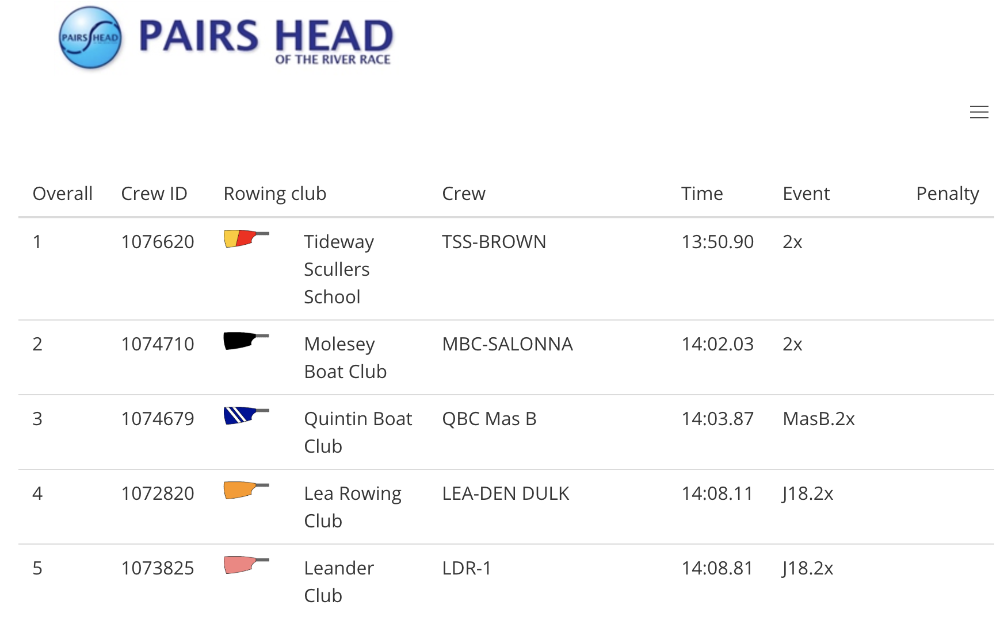

Sian Alcock
Junior Software Engineer, London
Profile
In December 2000, I co-founded a software business. We delivered award-winning risk management software to Fortune 500 companies, world-wide. Whilst travelling for a year after shrinking the business in 2018, I spent time thinking about what I really wanted to do next career-wise.
After learning about coding bootcamps, I decided that undertaking the General Assembly Software Engineering course would give me the tools I needed to support a career change into a role that would challenge me intellectually.
I really enjoyed the course and I was astonished at how much I could learn in such a short time. I discovered that after learning one programming language / framework, that mastering the next was much easier because even though syntax might vary, the underlying mechanics are broadly the same.
I am excited now to pursue a role of Junior Software Engineer in a company that will help me to consolidate everything I have learned and to start to build real-world, fully functional applications from end-to-end.
Technical skills
JavaScript
React
HTML5
CSS3
SCSS
Axios
Bulma
Git
GitHub
Yarn
NPM
Express
Node.js
MongoDB
Mongoose
Python
Django
PostgreSQL
Mocha
Chai
SuperTest
Development projects
As part of the General Assembly Software Engineering Immersive course, I undertook four development projects. Now that the course is over, I have chosen to continue my fourth and final project as a side project.
Pairs Head Results - extended side project

My side project is a continuation of my fourth General Assembly Project. This is a real-world application that will hopefully be used to generate results for the Pair's Head Rowing Race in October 2019 and thereafter.
Pairs Head Results
I built this fullstack application over 7 days. It uses Django/Python/SQLite (or PostgreSQL on deployed site) on the backend and React/JavaScript front end. It's purpose is to automate the preparation of results for the Pair's Head of the River Rowing Race which is held in October every year.
Lost the plot
For our third project at General Assembly, we were placed into groups of four and charged with building a fullstack application using Express/MongoDB backend and React/JavaScript frontend. The website aims to give users a means of finding green spaces / allotments / community gardens in London in which they can grow food.
Super-heroes - 48 hour hackathon

This project was described as a hackathon. We were put into pairs and given 48 hours to build a website using React/JavaScript. The website had to consume a public API. We chose Superheroes as our theme and found an API that listed 720 Superheroes.
Crop Capers
I built this fun, grid-based game on my own using JavaScript over 7 days. The game is called Crop Capers and was based on BattleShips. Instead of seeking out and destroying battleships, the player must seek out and dig up crops.
Experience
June to October 2019
General Assembly - Software Engineering Immersive
This challenging and intensive 12 week bootcamp covers fundamental programming and computer science knowledge, as well as experience with languages, frameworks, and libraries.
August 2018 to April 2019
Round the world travel
This global adventure took me and my partner to ten countries. The photographs on this site were all taken by us on that trip. Check out our blog here (not developed by me...)
December 2000 to June 2018
Director, Co-founder Citicus Limited
I co-founded and directed a software company to develop and sell world-class security, risk and compliance management software, plus supporting services.
Key responsibilities:
- Overall corporate strategy.
- Detailed design and specification of software capabilities and oversight of development capabilities.
- Documentation of all aspects of the software, including tutorials and FAQs.
- Development and Management of software quality assurance processes and resources.
- Design and delivery of software training courses.
Major achievements:
- Development and delivery of award-winning risk management software - sold world-wide and implemented by major companies like Kraft Foods, Unilever, Santos and more.
- Successful development and implementation of estimation planning and tracking tool that helped Citicus to routinely deliver high-quality software updates to precise timescales.
- Management of IT Help desk which was rated extremely highly by all customers.